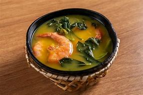

Arroz tropeiro
Ingredientes
150 grams
De bacon picadinho
250 grams
De linguica calabresa picadinha
1
Xicara de azeite (cafe)
2
Cebolas (picadinhas)
6
Dentes de alho amassados
500 grams
De feijao cozido e escorrido
1
Cubo de caldo de bacon
4
Ovos fritos inteiros e picadinhos
add
Gosto (cheiro-verde)
1
E 1/2 colher de farinha de mandioca crua
add
Sal (a gosto)
add
Pimenta (a gosto)

tacaca
Ingredientes (6 porções)
água
4 xícaras (chá) de água
1/2 xícara (chá) de polvilho azedo (ou goma de mandioca)
sal
1 colher (chá) de sal
500 g de camarão salgado (seco)
chicória
4 folhas de chicória
alho
4 dentes de alho bem amassados
pimenta-de-cheiro
3 pimentas-de-cheiro
jambu
2 maços de jambu
tucupi
2 litros de tucupi
maniçoba
Ingredientes (30 porções)
1,5 kg de maniva pré-cozida
folha de louro
Folhas de louro
1 kg de toucinho salgado
linguiça calabresa
1 kg de linguiça calabresa
charque
1/2 kg de charque
linguiça paio
1/2 kg de paio
1/2 kg de carne de porco assada de forno
bacon
1/2 kg de bacon
Costelinha de porco defumada